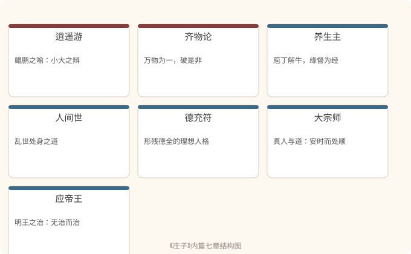

庄子
| 作者 | 庄周 |
|---|---|
| 成书/出版 | 战国中期陆续写成；东晋郭象（4世纪）删定为三十三篇今本（Britannica） Zhuangzi (book) — Encyclopaedia Britannica（百科全书） |
| 国别/地区 | 中国 |
| 时代 | 古代 · 先秦 |
| 体裁 | 哲理散文（诸子散文，寓言体） |
| 语言 | 汉语（战国通语，汪洋恣肆） |

二、创作背景
《庄子》是以庄周命名的中国哲学、文学与宗教经典（Britannica）。全书今本三十三篇，分内篇（1—7）、外篇（8—22）、杂篇（23—33）：Britannica 认为内篇大概出自庄周本人之手，外、杂篇则多为其弟子后学的发挥与衍展；今本形态出自4世纪郭象的删定。
战国中期，百家争鸣至高潮：儒墨论战、名家辨析名实、杨朱贵己。庄子的写作正是对这一'以言消言'语境的回应——他用故事消解论辩本身。文本在汉代即有《庄子》五十二篇本与各种节本之别，郭象定本后成为唯一通行系统（本页转述版本史通说，待核）。
与儒家经典不同，《庄子》从未成为官方教科书，却始终是乱世文人、艺术家与禅僧的秘密火种：魏晋'三玄'、《文心雕龙》、唐诗禅意、宋元山水画论，皆有其血脉。
三、内容脉络
内篇七章构成全书哲学骨架：《逍遥游》以鲲鹏与蜩鸠之辩开宗，确立'小大之辩'与无功利的自由境界；《齐物论》论'天地与我并生，万物与我为一'，破是非彼此的对立；《养生主》以庖丁解牛喻'依乎天理'的养生之道；《人间世》讲乱世处身，《德充符》写残缺者的人格完满，《大宗师》论'真人'与道，《应帝王》收于无治而治的政治想象。
外、杂篇沿用内篇语汇而取向多元：《秋水》续'小大之辩'（河伯与北海若对话、与惠施论鱼乐），《至乐》有'鼓盆而歌'，《寓言》自陈全书'寓言十九，重言十七，卮言日出'的文体策略，《天下》篇则是中国最早的学术史总论之一，评骘百家而以庄学为'独与天地精神往来'。
全书没有严格的论证链条，而是一场由寓言组成的思维剧场：每一则故事都是一个思想实验，邀请读者从习惯性判断中退出来，重新观看'物'与'我'。
四、主要人物表
| 人物 | 身份 | 说明 |
|---|---|---|
| 庄周 | 对话与寓言的主角 | 穷困、幽默、把死亡看作自然节律的思想者 |
| 惠施（惠子） | 名家学者，庄挚友 | '子非鱼，安知鱼之乐'的论辩对手（Britannica 提及其为庄之对话者） |
| 庖丁 | 解牛的厨工 | '游刃有余'之喻的主人公，技进乎道的象征 |
| 接舆、长梧子等 | 狂人、隐者 | 借'狂言'说真话的边缘智者形象群 |
五、主题与艺术特点
- 道与自然（ziran）：宇宙是道的不断转化过程，万物由此生生不息（Britannica）；人应'依乎天理'顺应而非强为。
- 齐物与反逻辑：现实是'antilogical'的（Britannica 的定性），固守是非彼此的知性恰恰遮蔽了真实；'朝三暮四''罔两问景'皆解构独断。
- 自由与无用：逍遥不是逃离而是不被功名、生死、荣辱'悬置'；不材之木以'无用'得终天年。
- 生死观：妻死鼓盆、'以天地为大炉'，把死亡还原为气的聚散——为后世中国文人提供了面对无常的哲学资源。
- 文体特点：寓言（19/10）、重言、卮言三者并用，汪洋恣肆而针线内藏，成为浪漫主义文学的汉语母体之一。
六、影响与评论
- Britannica：《庄子》为'中国哲学、文学与宗教的经典'，对道家、佛教及宋代理学影响深远。
Zhuangzi (book) — Encyclopaedia Britannica（百科全书） - Britannica：郭象4世纪的删定注释本（33篇）成为通行版本；'南华真经'之尊号亦见载于该条目。
Zhuangzi (book) — Encyclopaedia Britannica（百科全书） - 魏晋玄学以《庄子》为'三玄'之一；嵇康、阮籍、陶渊明的精神姿态，山水诗画与禅宗公案的话语方式，皆深得其滋养（本条为学界通行概括，具体引证待核）。
Zhuangzi (book) — Encyclopaedia Britannica（百科全书） - 现代影响：'蝴蝶梦'成为世界文学史中关于真实与虚幻的著名意象之一，与笛卡尔之梦常被并提讨论（本条为一般性比较，待核）。
Zhuangzi (book) — Encyclopaedia Britannica（百科全书）
七、阅读建议
- 古字通假与方言词多（'县'通'悬'类），注释不可少。
- 篇章真伪杂糅：内篇与外杂篇思想取向并不一致，宜分层次读。
- 哲学概念（道、天、命、性）回避定义，初读者易觉得'没说清'——其实'反逻辑'正是方法（Britannica 的解读可作支持）。
- 郭庆藩《庄子集释》（中华书局）：以郭象注、成玄英疏为底的传统集大成注本。
- 陈鼓应《庄子今注今译》（中华书局）：今译+注释+义理导读，通行入门本。
- 张默生、曹础基诸本可作对照；英译可参看华兹生（Burton Watson）《庄子》全译本与葛瑞汉（A.C. Graham）译本。
先读《逍遥游》《齐物论》《养生主》三大内篇（配今译）→ 读《人间世》《德充符》《大宗师》《应帝王》补全内篇 → 再跳读《秋水》《至乐》《寓言》《天下》，最后按兴趣翻检外杂篇。
八、待核实
- 庄周生卒年与里籍考订分歧（见作家页待核实）。
- 外、杂篇各篇的具体作者与作年，学界尚无共识，本页从 Britannica 的'弟子后学'模糊表述。
- 《庄子》五十二篇古本与郭象三十三篇本的差异（佚篇佚文），待核。
- '寓言十九'等自述的出处（见《寓言》篇）与具体统计口径，本页转述待核。
本页主要来源
庄周的其他收录作品：庄子